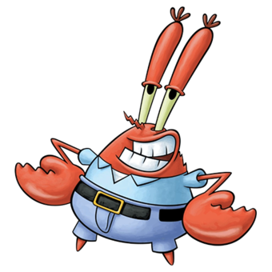
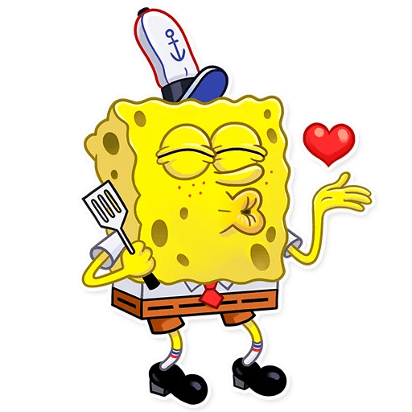
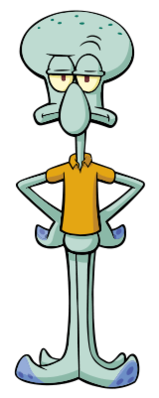

Дорогие друзья! В этом Разделе вы познакомитесь с нашими работниками.
Владелец KrustyKrab
Юджин Краб основал свой ресторан, для заробатка денег. Хоть он одержим своим богатством, он все равно любит свой рестороан и ценит своих рабочих. Благодаря фирменному рецепту Крабсбургера, Мистер Крабс смог получить славу в Бикини Боттом. Свой ресторан он расположил в старой лобстерской ловушке. Интерьер столовой вполне обычный выполнен в морском стиле. Столы сделаны в виде штурвалов парусного судна, а стулья в виде бочек.

Повар Губка Боб Квадратные Штаны
Юный повар, совсем недавно устроился на работу. Благодаря любви к работе, он делает изумительные крабсбургеры, что повышает уровень ресторана. Губка Боб очень целлеустремленная и активная губка, которая приносит рабость в КрастиКраб. Эта грубка любит в своей работе все: лопатку, плиту, шапочку...

Кассир Сквирдвард Тэнтеклс
Сквирдвад давно работает у Мистера Крабса. На столько давно, что ему надоела касса, работа, да и жизнь впрочем. Из-за своего безразличия, КрастиКраб порой теряет своих клиентов.
